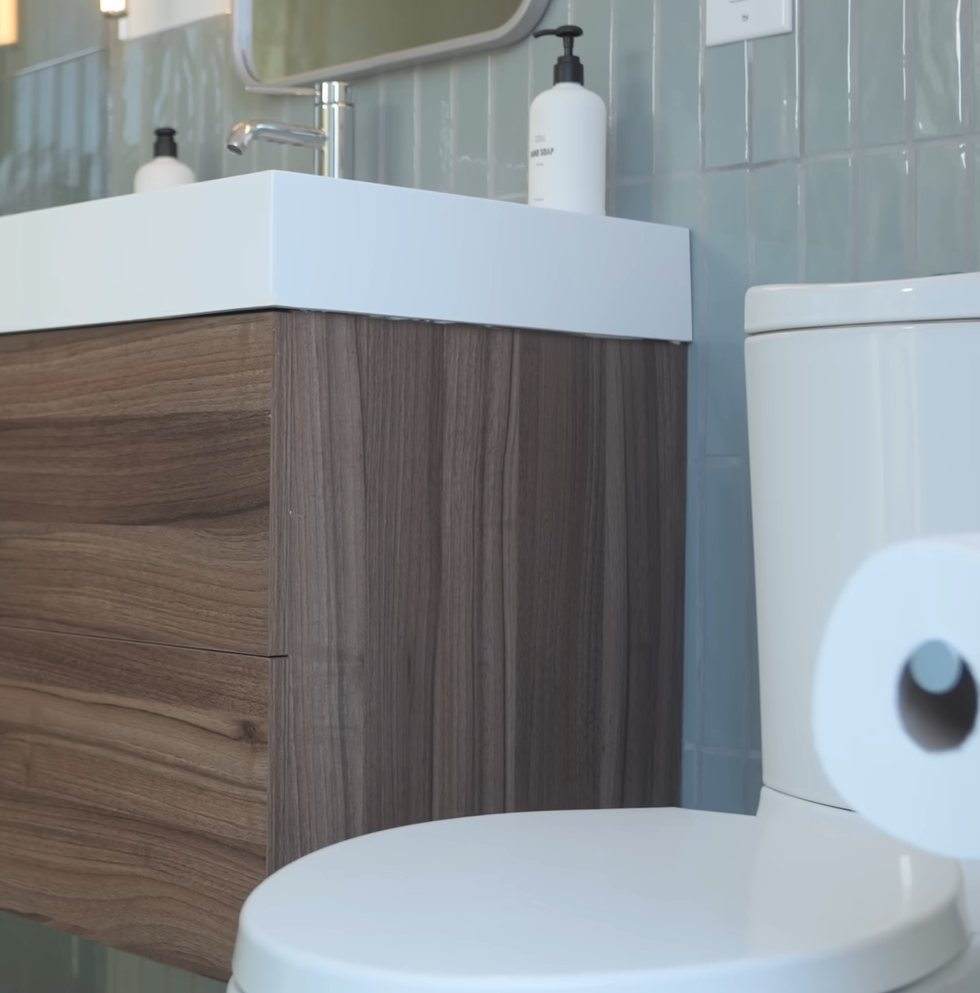
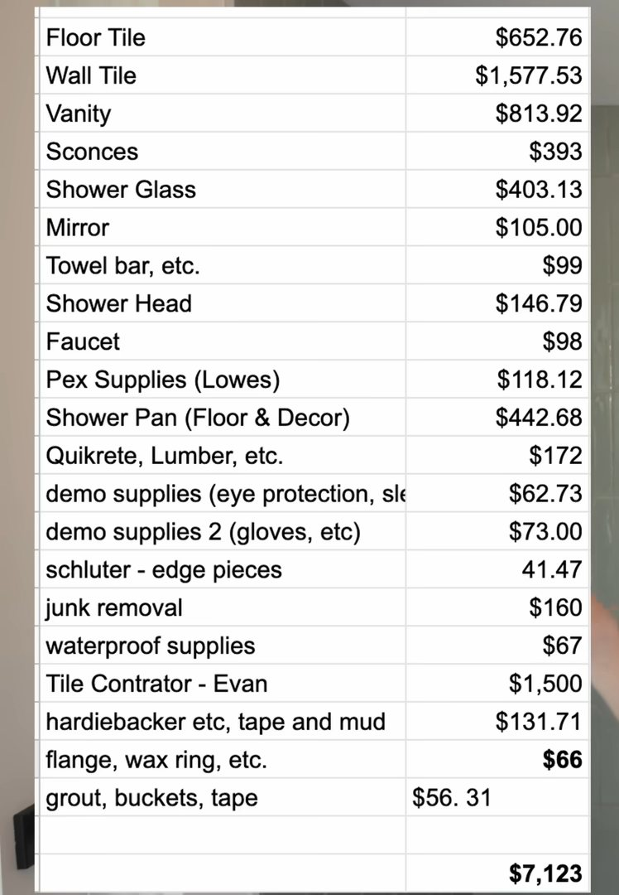
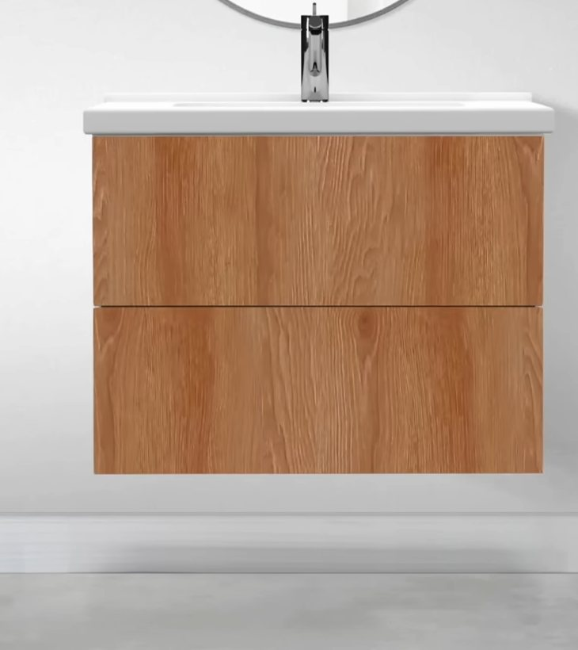
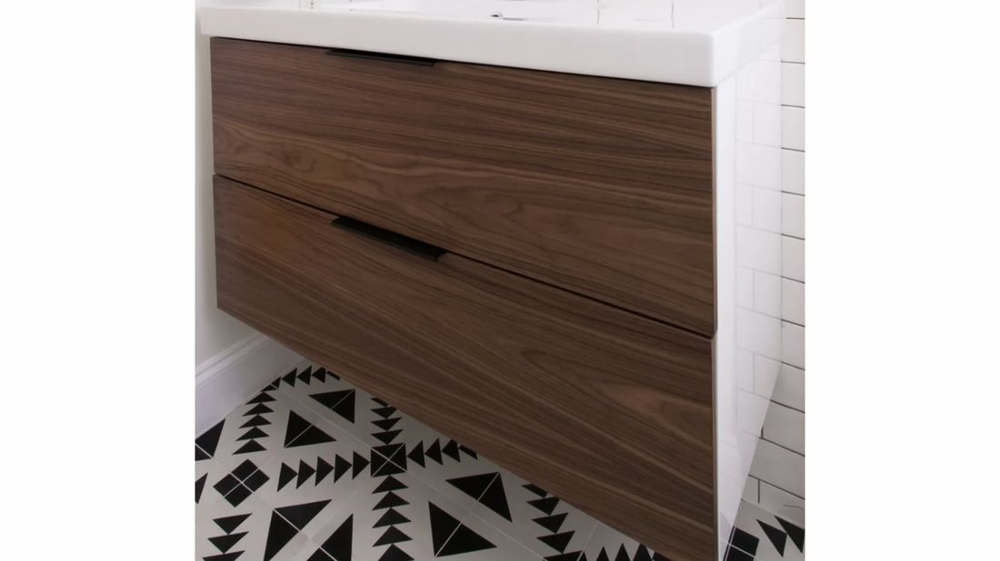
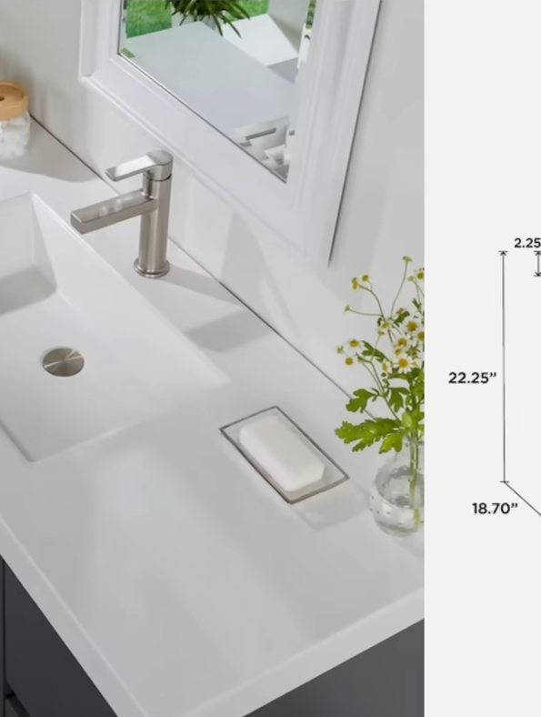
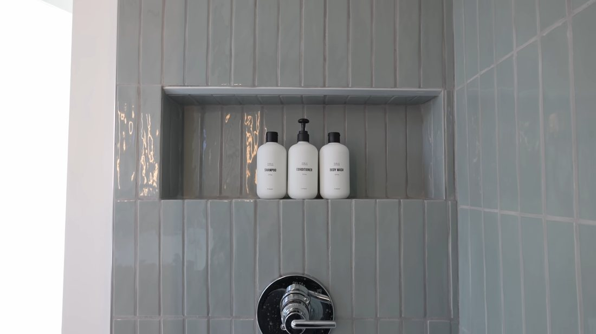
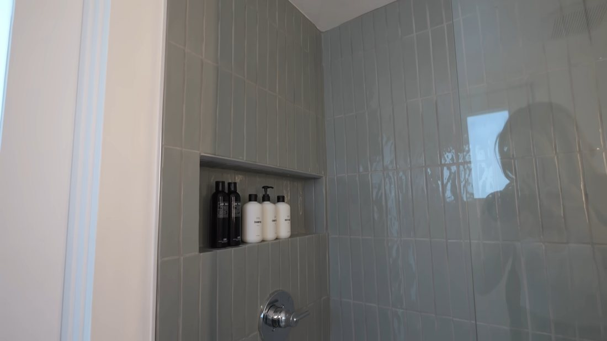
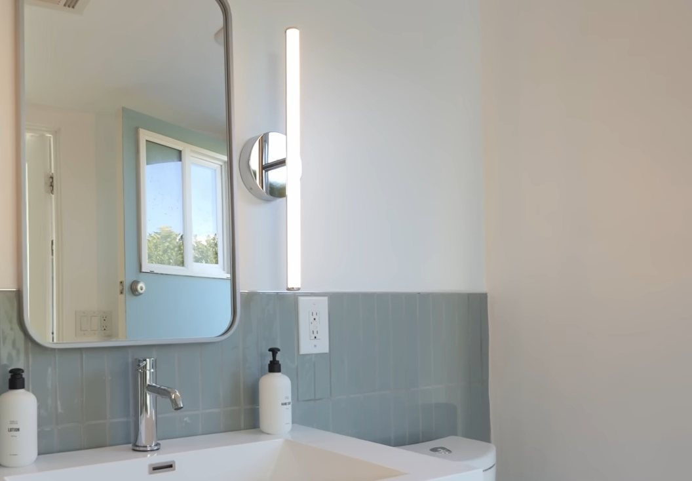
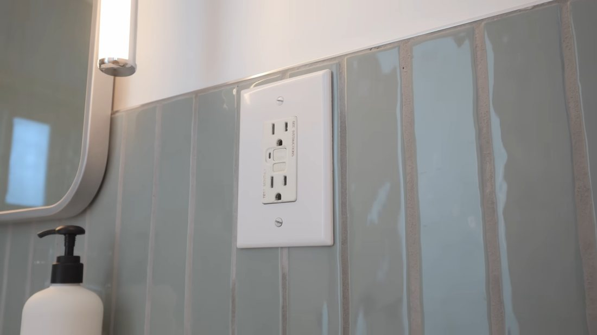

一位博主把棕榈泉 Airbnb 里一间 5×8 英尺的小浴室翻新了一遍，逐项公开账单：原估 5000 美元，实花 6859 美元，四个星期做完。这篇把她的价格、可省的三处和五条事后才懂的经验整理成可以照着核对的清单。

结论先说在前面：省钱的关键不是买便宜砖，而是少外包。视频里说，如果全部外包，她估计要花约 1.5 万美元，因为加州人工贵，而她与父亲自己做了大部分活，才把总额压在 6859 美元00:02:11。
把账单按「拆、基层、饰面、设备、人工」五段看，最贵的一项不是瓷砖，而是瓷砖承包商00:01:42。
| 项目 | 金额 | 视频字幕时间点 |
|---|---|---|
| 拆除材料 | 135.73 美元 | 00:00:36 |
| 管道材料（含一件偏贵的工具） | 118 美元 | 00:00:40 |
| 速凝混凝土、木材等 | 172 美元 | 00:00:45 |
| 淋浴房建造（含排水管） | 442.68 美元 | 00:00:55 |
| 垃圾清理 | 160 美元 | 00:00:59 |
| Hardie 背衬、胶带、腻子 | 131 美元 | 00:01:03 |
| 墙砖：15 美元/平方英尺，共 | 1577 美元 | 00:01:05 |
| 地砖：8 美元/平方英尺，共 | 652 美元 | 00:01:09 |
| 盥洗台 | 813 美元 | 00:01:16 |
| 一对壁灯 | 358 美元 | 00:01:19 |
| 淋浴玻璃 | 403 美元 | 00:01:21 |
| 镜子 / 五金件 / 淋浴喷头 / 龙头 | 105 / 99 / 146.79 / 98 美元 | 00:01:24 |
| Schluter 收边条 | 约 41 美元 | 00:01:34 |
| Home Depot / Lowe's 其他杂项 | 约 150 美元 | 00:01:39 |
| 瓷砖承包商 | 1500 美元 | 00:01:42 |
| 合计 | 6859 美元 | 00:01:48 |
博主自己也提醒：如果漏记了什么，实际花费可能再多几百美元00:01:56。她给的平均对照是「浴室翻新平均 11290 美元」，这是她的说法，不是本文的统计结论00:02:05。

博主事后复盘，至少有三处可以少花钱，而且不是靠降低质感。
她的判断标准很直接：砖越窄越贵，因为制作成本更高00:04:24。这条片里对比的是 2×10 英寸与 3×12 英寸两款，她认为后者效果一样好00:04:29。



她的经验法则是：装修成本约 60% 是人工，不是材料00:04:51；而无论材料花了多少，最终装修费往往是材料成本的 2–3 倍00:05:30。
贵在哪里？都是墙后看不见的活：做好防水、确保墙体水平或向下倾斜00:05:19。所以做预算时，别只盯着砖和柜子的单价——先问清楚哪几道工序必须付钱给别人。
墙一旦封上，再改布局就要砸砖。博主的原话是：墙打开的时候，是唯一一次可以调整布局的机会00:05:44。
| 要定的项 | 她的做法 |
|---|---|
| 淋浴阀位置 | 移到淋浴房另一侧，开门时不会被水直接喷到00:05:57。 |
| 壁灯硬线 | 把原来的灯换成壁灯，并预先拉好线00:05:52。 |
| 插座位置 | 趁墙面没封，重新排插座；梳妆台灯下方预留是一处好用的位置00:06:31。 |
固定玻璃淋浴房尤其要注意阀门方向，不然每次进门都得躲冷水00:06:16。改动会增加一点成本，但事后返工的代价是拆掉所有瓷砖00:06:04。


在墙还没拆开/封上之前，用手机把所有管道和电线的位置拍下来00:06:51。以后要在墙上拧螺丝时，翻出照片就能避开管线00:07:02。

她这次踩过的坑：在 Wayfair 买了一只约 300 美元的台面水槽，后来定制盥洗台自带水槽，用不上了；退货要付 50 美元运费，还得自己搬去联邦快递门店00:07:16。
所以她的规则是：网购装修材料，优先挑有实体店的商家00:07:10。家得宝和劳氏的网上款式比店里多，但真不合适时可以直接去店里退00:07:51。量得再准也会有不合的时候——实物与网图不一样、尺寸差一点，都很常见00:08:04。

工具上，总有能替你补上力气不足的那一件：拆不下墙砖可以租类似电动锤的机器，用大锤比凿子加锤子省劲得多00:08:42；连石膏板螺丝拧不进去，也有更适合力气小的人用的螺丝00:09:06。
工期上，她的经验是装修时间总会比想象的长00:09:18。总承包商往往在上个项目没结束时就接了新活，做到一半人就消失了00:09:52；这位瓷砖承包商说「明天完工」，结果三天后还没完00:10:33。
「时间和预算都会翻倍」是视频里引用的俗话00:09:37。把它当心理预期，而不是精确公式——真正要做的是主动盯到场时间、把进度留出余量00:10:52。
| 坑 | 怎么避 |
|---|---|
| 只按材料费做预算 | 把人工按总成本约 60%、总额按材料 2–3 倍先估一遍00:04:51。 |
| 封墙后才发现阀门/插座位置不对 | 墙打开时一次定完布局，并拍照存档管线00:05:39。 |
| 为相似外观多付一倍砖钱 | 对比宽度差一英寸的近似款，视频里这个选择约省 700 美元00:04:20。 |
| 退货运费与搬运费 | 优先选有实体店的商家，网上买也能到店退00:07:10。 |
| 信承包商的完工日期 | 预留缓冲期，主动督促工人按时到场00:10:52。 |